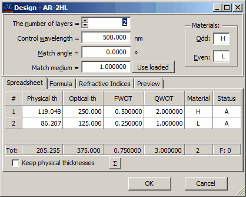
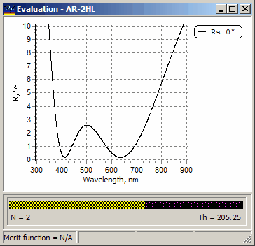

Exercise 3. Two layer antireflection coating: basics of OptiLayer design description
Exercise 3. Two layer antireflection coating: basics of OptiLayer design description
All necessary files for this exercise are located in the directory EX3. Select this directory using the Problem menu command. In SF Mode you need to use Import Problem Directory command (File Menu).
Load the Substrate GLASS file into memory. Load also SIO2 and ZRO2 files from the Layer Material database. They will get abbreviations L and H correspondingly.
Enter the Design database and examine the file with the name AR-2HL.

This design can be described by the formula 2H 1L @ 500nm. Remind that layers are numbered starting from the substrate. Load this design into memory and perform T, R evaluation. Set X-axis scale from 300 to 900nm, T,R-axis from 0 to 10% and select R (reflectance) as plotted characteristic. The Evaluation window will look as follows:

In order to better understand the role of character abbreviations, load the MGF2 file. It will get the abbreviation A. Check this with the help of the General Information window.
Enter the Arrange Materials item in the Data menu, a window will be displayed where abbreviation assignments can be changed. Change the abbreviation of SIO2 to M, and the abbreviation of MGF2 to L. Note that the plot at the Evaluation window has not been changed. Create the Current Design Report (Results menu) and check that the design now is represented as 2.0H 1.0M. This means that the material of the second layer is the same as before, yet the abbreviation has been changed.
It is important to understand the relationship between the design layer materials denoted by character abbreviations and layer materials loaded in memory. The link between the loaded materials and the design material abbreviations occurs when the Load command is executed. To illustrate this, load the AR-2HL design again and note that the reflectance plot has been changed. This is because the first material of the design in memory is still ZRO2 as before, but the second material has been changed to MGF2 . If you examine the Design edit Window you will see that the physical thickness of the second layer is now 90.58nm instead of 86.21nm as before. The physical thickness has been changed when a new material, i.e., MGF2 has been linked with the second layer.
|
Important note: Basic design description in OptiLayer is its description in terms of layer optical thicknesses. Layer physical thicknesses are calculated in accordance with the layer materials linked to the design after its loading into memory. |